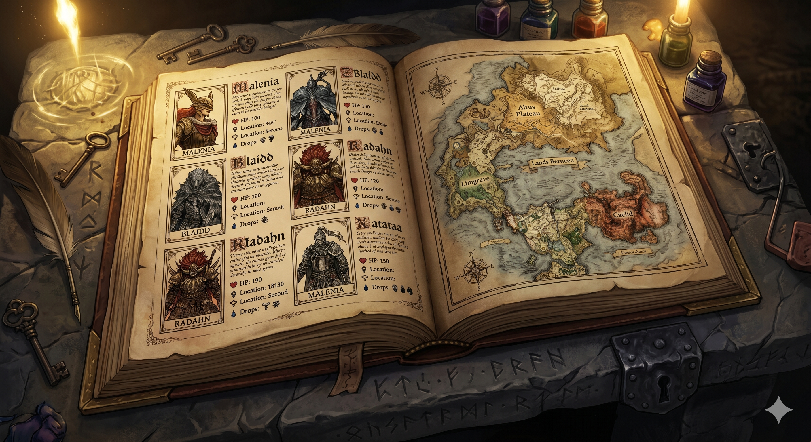

Bestiaire Elden Ring
Projet consistant à la mise en place d'un bestiaire pour le jeu Elden Ring. Toutes ces données sont récupérées via une API.
Chacune des données de chaque ennemi sont représentées de manière claire et précise, avec une interface utilisateur intuitive pour faciliter la navigation à travers les différentes espèces d'ennemis du jeu.
Par ailleurs, d'autres données sont présentes tel que les PNJ, ou encore les armes et armures du jeu.